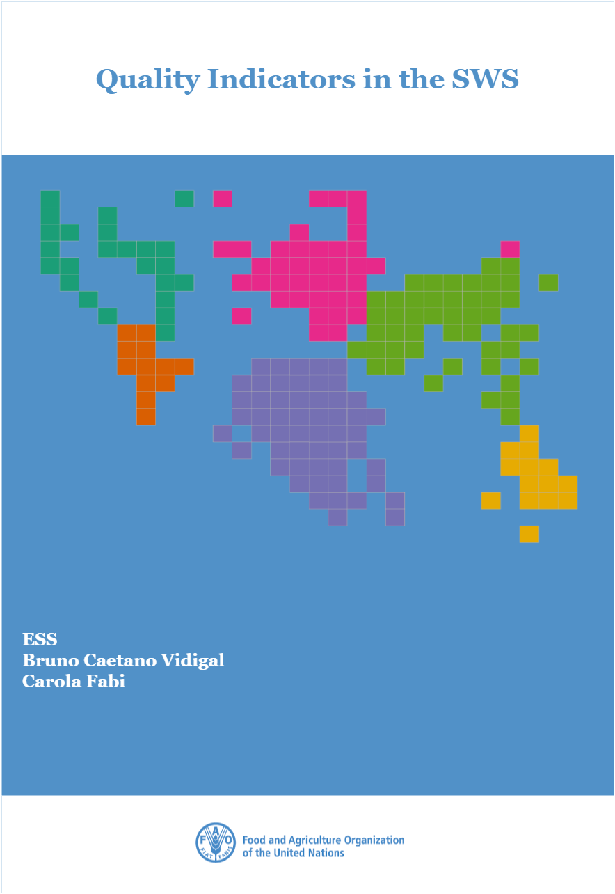

Quality Indicators in the SWS
Bruno Caetano Vidigal Statistician - ESS - Methodological Innovation Team
2021-05-30
Welcome
Producing and disseminating high quality statistics are paramount for delving deeper into agriculture and food issues and FAO has proposed a set of indicators to measure quality in different types of dimensions: relevance, accuracy and reliability, timeliness and punctuality, coherence and comparability, accessibility and clarity. This book describes the entire implementation of the Quality Indicators in the Statistical Working System (SWS) applied to the several statistical processes - Agriculture Production and Trade, Fertilizers, Pesticides, Land Use, Forestry Production and Trade, Producer Prices and Fisheries.
IMPORTANT: Use the Chrome browser to have a correct visualization of HTML outputs in this online document.
